Hydrocarbons
Description
This section is from the book "Modern Chemistry", by William Ramsay. Also available from Amazon: Modern Chemistry: Theoretical and Modern Chemistry (Volume 2).
Hydrocarbons
The hydrides of carbon, or " hydrocarbons," are very numerous, and form an important group of substances. In many respects they are analogous to the metals, and they yield derivatives comparable with those of the metals. The preparation of some of them has already been described; but in order to give a more complete idea of their structure and functions, a short description of other methods of forming them is annexed.
Methane or marsh-gas, if mixed with its owri volume of chlorine, and exposed to daylight-not sunlight, else the mixture would explode-undergoes the reaction CH4-f Cl2 = CH3CI + HC1. The resulting gas, termed chloro-methane, is soluble in ether, a volatile liquid compound of carbon, hydrogen, and oxygen. If pieces of metallic sodium are added to the solution, the sodium withdraws chlorine from the chloromethane and a gas is evolved. On analysis, it gives numbers answering to the formula CH3. But if that were its formula, its molecular weight in grammes would occupy 22.4 litres; but 15 grammes occupy only 11.2 litres; hence its molecular weight must be 30, and not 15, and its formula cannot be CH3, but must be C2Hfi. It is reasonable to suppose that the mechanism of the reaction is this :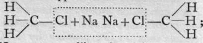 and that the two CH3 groups on liberation join together, forming the complex group, 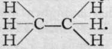 Similarly, mixing C2H6, which is named ethane, with its own volume of chlorine, a reaction takes place like that with methane, and chlorethane is formed, thus: C2H6 + C12 = C0H5C1 -f- HC1. Chlorethane dissolved in ether and treated with sodium yields not C2H5 but C4H10, and it may be supposed that the constitution of the new hydrocarbon, butane, is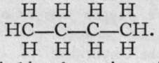 A mixture of chloromethane and chlorethane gives with sodium an intermediate hydrocarbon, C3H8, propane, 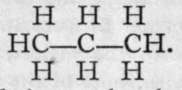 When chlorine and propane are mixed in equal volumes, two chloropropanes result; they have identical formulas and molecular weights, and it is believed that the difference between them consists in the position of the entering atom of chlorine. In one case the chlorine replaces hydrogen attached to one of the terminal atoms of carbon, thus:
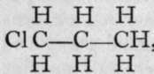 , while in the other the medial hydrogen is replaced: 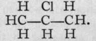 These two chloropropanes yield in their turn two methylpropanes or butanes. Two such substances are said to be isomeric, or to exhibit isomerism with each other. The following list gives the names and formulas of some of this series of hydrocarbons; where the difference between their formulae is CH2, they are said to form a " homologous series."
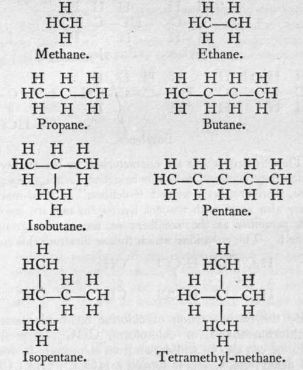Chloromethane, if mixed with its own volume of chlorine and exposed to light, yields a dichloromethane, thus : CH3C1 + Cl2 = CH2C12 + HC1. This compound, which, like chloromethane, is also a gas soluble in ether, on treating its solution with sodium, loses chlorine and is converted into ethylene, thus: CH2C12 + 4Na + Cl2CH2 = 4NaCl
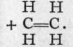 The carbon atom, it will be observed, is still a tetrad, but the two atoms are connected by a "double bond " ; that is, by means of two electrons. Homologues of ethylene are known, of which the following are a few :-
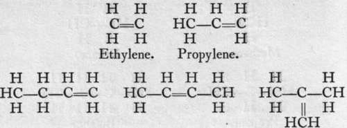Butylenes.
These hydrocarbons are characterised by the facility with which they combine with the halogens, forming oils ; they have, therefore, been termed "olefines," or " oil-makers." They also unite with nascent hydrogen, and are converted into paraffins, as the members of the former group are termed. The equations which follow illustrate this :-
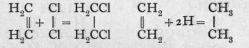
By the further action of chlorine on dichloromethane, trichloromethane, or chloroform, CHC13, is produced. Chlorine can also be withdrawn from chloroform by sodium, and acetylene, C2H2, is formed : HCC13 + 6Na + C13CH = 6NaCl + HC=CH. Here the two carbon atoms are represented as united by a treble bond, and each carbon atom is still believed to remain tetrad. Acetylene is also characterised by the ease with which it unites with chlorine, forming a tetrachlorethane : HC^CH + 2C12 = C12HC-CHC13. Here, also, other members of the series are known.
The passage of acetylene through a red-hot tube is attended by " polymerisation ; " that is, two or more molecules unite to form a more complex one. In this case, three molecules of acetylene combine to form a molecule of the formula C6H6, a compound to which the name benzene is applied. It is produced in large quantity by the distillation of coal, and is separated from coal-tar oil by distillation. Its carbon atoms are imagined to form a ring, because, among other reasons, it yields only one mono-chloro-substitution product: 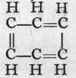 gives on treatment with chlorine, Cl2,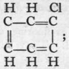 and as all the hydrogen atoms in the molecule are symmetrically arranged with respect to the carbon atoms, this condition is fulfilled.
The four first members of the methane series are gases ; those containing a greater number of atoms of carbon up to eleven are liquids, and the higher members are solids. The paraffin oil which is burned in lamps consists of a mixture of the liquid members, and paraffin candles largely consist of the solid members. They are all practically insoluble in water. The defines have similar physical properties, and benzene is a volatile liquid. Iodine, sulphur, and phosphorus dissolve in the liquid hydrocarbons.
These and other hydrocarbons may be considered as somewhat analogous to the metals ; the analogy appears in the methods of formation and formulas of their derivatives.
Continue to:
- prev: General Nature Of The Hydrides
- Table of Contents
- next: Chapter III. The Halides Of The Elements-Double Halides -Endothermic Combinations-Hydrolysis -Oxidation And Reduction-Mass-Action